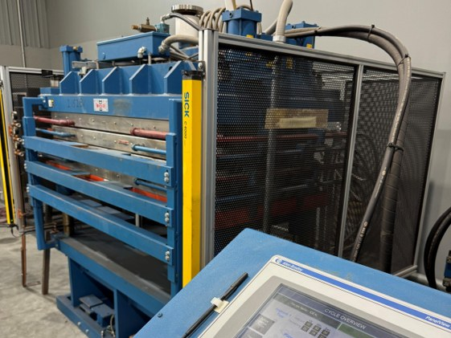
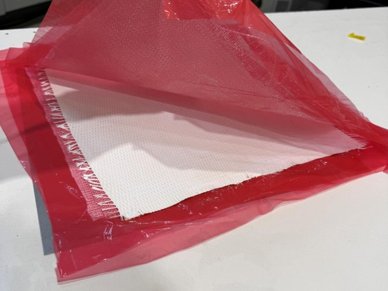

Engineering Intern · Aerodine Composites · Summer 2026
Ceramic Matrix Composite Research, Production, and Testing


The problem
Aerodine's core business is fiberglass and carbon fiber. To diversify and expand its customer base, the company accepted an order for a structural component that had to survive continuous service above 1000 °C in steam. No polymer matrix the shop had ever run could handle that. The shop had never worked with ceramics, so there was no procedure or qualified material system to start from.
Building the process
I started with a materials survey to find a matrix and reinforcement pairing that could hold up under those conditions, working from published oxide ceramic composite research and supplier data. From there I worked on a small team to develop the process. The route we landed on was a wet manual layup of a ceramic slurry onto fabric, warm pressed and polymerized into thin sheets, then fired.
Slurry formulation and particle packing
Getting the matrix into the fiber tows was the first real problem. With my team, I researched particle packing with alumina to figure out how much alcohol the slurry needed. The slurry had to carry enough matrix while staying thin enough to infiltrate the fiber.
We also looked at infiltration routes that skip the polymer binder entirely and decided not to pursue them. They would have removed the burnout step, but they did not fit the equipment the shop already had or the cycle time the order needed. Keeping the polymer route meant designing the heating schedule around burnout, which turned out to be the cheaper and faster problem to solve.
Binder burnout and sintering
Firing had to do two things: burn the polymer binder out of the part and densify the ceramic. Doing both in one cycle took a stepped heating schedule rather than a single ramp. The binder burned out well below 700 °C, and sintering ran in the mid-1200 °C range. We also set the parts on kiln furniture instead of flat on the shelf, so oxygen could reach the whole surface and burnout products had a way out.
Testing
Testing was straightforward. We measured porosity with Archimedes' principle, using vacuum infiltration with water, and measured flexural strength in a three-point bend test. Both were checked against the customer's specifications and tolerances.
Skills practiced
- Material selection for high-temperature steam service
- Ceramic slurry formulation and particle packing
- Wet layup, vacuum bagging, and warm press consolidation
- Firing schedule development for binder burnout and sintering
- Porosity (Archimedes) and three-point flexural testing
- Literature and supplier research